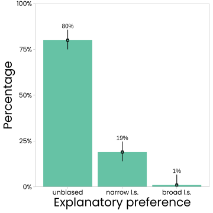

Experiment 3 pilot
This study was a pilot study of Experiment 3. More information is given in the summary section below.
1 Demo Version of Pilot Study
To see a demo of the experiment in a separate browser window, click here.
To download the program files of the experiment, click here.
2 Data
- Download Experimental data [.csv-file; delimiter = “,”]
Please note: 200 subjects were tested in this pilot experiment, but the data set contains 202 rows because two subjects happened to appear in two rows (i.e., they appeared twice in the data set), presumably due to a recording error. These are the subjects with subject codes (subj_code): “8R9V4veIAuw1” and “2lkGumre6eN4n”. In the analysis script that can be downloaded below, these duplicate entries are deleted in a first step.
2.1 Data set information
The data set contains the following columns:
- subj_code: a subject code
- condition: condition variable (1 to 4)
- desktop_conf: confirmation that desktop PC was used
- attent_conf: confirmation that subj. is willing to pay attention
- latent_feature: the latent feature in the test case (beak vs. feet)
- LS_bias_probe_stim: the latent scope test pic subjects saw
- scale_orient: counterbalancing factor coding if narrow scope explan. was on the left or right side of the rating scale
- instr_tests: number of attempts it took a subject to pass instruction test
- LS_bias_probe_rating: subjects rating for the latent scope test probe
- explanation: subjects explanation of their latent scope test probe rating
- bluefeet_choice: subjects’ selected explanation for the additional probe without latent scope (duck with blue feet and normal beak)
- bluebeak_choice: subjects’ selected explanation for the additional probe without latent scope (duck with blue beak and normal feet)
- typical_choice: subjects’ selected explanation for the additional probe without latent scope (duck with normal beak and normal feet)
- bluefeet_bluebeak_choice: subjects’ selected explanation for the additional probe without latent scope (duck with blue beak and blue feet)
- age: subjects’ age
- gender: subjects’ gender
- tech_issues: subjects report of technical issues
- rating_rec: recdoded ratings for the latent scope bias probe (so that negative values mean narrow scope pref. and positive ratings mean braod scope pref.)
3 Analysis Script
- View R-Markdown code
- Download R-Markdown code
- View knitted/ compiled R-Markdown (web view of analysis)
Please note: 200 subjects were tested in this experiment, but the data set contains 202 rows because two subjects happened to appear in two rows (i.e., they appeared twice in the data set), presumably due to a recording error. These are the subjects with subject codes (subj_code): “8R9V4veIAuw1” and “2lkGumre6eN4n”. In the analysis script that can be downloaded above, these duplicate entries are deleted in a first step.
4 Analysis of subjects’ explanations
- View R-Markdown code
- Download R-Markdown code
- View knitted/ compiled R-Markdown (web view of analysis)
Note: A .csv file containing all subject explanations is included in the folder that come with the R-Markdown code download.
Please note: 200 subjects were tested in this experiment, but the data set contains 202 rows because two subjects happened to appear in two rows (i.e., they appeared twice in the data set), presumably due to a recording error. These are the subjects with subject codes (subj_code): “8R9V4veIAuw1” and “2lkGumre6eN4n”. In the analysis script of subjects’ explanations that can be downloaded above, these duplicate entries are deleted in a first step.
5 Summary of the pilot study
The main study implemented some changes based on what could be learned from this pilot study. For this reason, the pilot study is described here in greater detail.
The study used the same scenario as the main study, but only tested condition with explicit rate information. In the pilot study, subjects were given information about the base rates of the three different mutations. However, the factor that is actually crucial according to the inferred evidence account is information about the rate of the (latent) feature(s). For this reason, the scenario description of the main study deviated in this respect from the pilot study.
In the pilot study, the names for the three mutations were “BkFt2” for the mutation causing a blue beak and blue feet, “Bk1” for the mutation causing only a blue beak, and “Ft1” for the mutation causing only blue feet. This was also changed in the main study, because these labels tended to confuse some participants in a problematic way. I will say more to this below when I summarize the results.
Another difference from the main study was the wording used in a response option for the simplicity probes. The phrasing in the option for the co-occurrence of both single-effect mutations read “This duck has a Bk1 mutation (blue beak only) and a Ft1 mutation (blue feet only)”. Apart from the new mutation names, this option in the main study left out the words “only”.
The procedure of the pilot study was otherwise identical to the one of the main study. Readers who are interested and prefer not to read the text below may run the demo version of the pilot study. The link is provided above.
5.1 Participants
Two hundred subjects (\(M_{age}\,= 37.44\), \(SD_{age}\,= 11.10\), age range 19 to 75 years) recruited via the online platform participated in this study and provided complete data. The inclusion and exclusion criteria were the same as in the previous studies. Subjects from previous studies of this experimental series were excluded from participation. The stopping criterion for data collection was a certain degree of estimation precision of group means. To detect even small narrow latent scope biases, it was decided that the 95% CI of the mean should be \(\le~0.5\) points on the eleven-point rating scale. At the same time, there should be equally many subjects in each condition (there were four between-subjects conditions that resulted from two counterbalancing factors that will be described below). This degree of estimation precision was reached after \(n~= 50\) subjects per condition (CI width of overall mean \(=~0.45\)).
5.2 Design and Procedure
The study had a within-subject design as all subjects saw all different test stimuli shown during the test phase. However, the unobserved feature (beak vs. feet) of the narrow-latent scope bias probe was counterbalanced between subjects. A second counterbalancing factor was the orientation of the rating scale for that probe.
Subjects read a fictitious scenario about color abnormalities that biologists detected in a duck population of a Northern Italian lake. Subjects learned that some ducks have been found to have blue beaks, blue feet, or both. These color abnormalities were found to be the result of different independent gene mutations, called BkFt2 (blue beak and feet), Bk1 (blue beak), and Ft1 (blue feet). Together with the short scenario description, subjects also saw an illustration. The main scenario description read:
Please read the following fictitious scenario thoroughly:
Biologists have noticed a peculiar phenomenon in the duck population of lake Caldazzo, a remote mountain lake in Northern Italy: Some ducks of lake Caldazzo happen to have blue feet (instead of the typical orange), others happen to have blue beaks (instead of the typical yellow), and yet others happen to have both blue feet and blue beaks.
It was soon found out that these abnormalities are caused by genetic mutations existing in some ducks of the duck population of lake Caldazzo.
Three mutations explain the observed color deviations:
A graphic summary of what these mutations do is given below. Please study this information carefully. Your understanding of these mutations and their effects on duck color is crucial for the present study.
- A mutation called BkFt2, leading to a blue beak and blue feet.
- A mutation called Bk1, leading only to a blue beak.
- And a mutation called Ft1, leading only to blue feet.
After this initial information, subjects proceeded to a new screen where they learned about the prevalence of each mutation. They learned that all three mutations were rare; they all had a prevalence of \(5\%\). A low base rate was used because this should increase the tendency to commit narrow latent scope biases according to the inferred evidence account (Johnson et al., 2016). Subjects also learned on that screen that the three mutations were causally independent. They read: ``Also, the mutations occur independently of each other, which means that having one of the mutations has no influence on the probability of having another mutation.’’.
Subjects had to pass a comprehension test. They had to answer three multiple-choice questions testing (1) their knowledge of what the three different mutations do, (2) their understanding of what it means that the mutations are independent, and (3) their knowledge of each mutation’s prevalence (for the exact wordings, see the demo provided at the repository site). On a second screen of the comprehension test, subjects provided ratings to three additional test questions that again probed their understanding of the mutations’ prevalence, but this time in a different format. This additional prevalence check was added to ensure that it was as clear as possible to subjects that the mutations and their effects are rare, which should boost narrow latent scope biases according to the inferred evidence account. For each mutation, subjects were asked: ``Imagine a perfectly reliable test that always finds a [BkFt2, Bk1, Ft1] mutation in a duck if that mutation is present. If such a test were to be conducted in a fully representative group of 100 ducks, in how many of them would the test be expected to detect the presence of a [BkFt2, Bk1, Ft1] mutation?’’ Subjects provided their responses on 20-point, 5-steps, rating scales ranging from 5 (the correct answer) to 100.
Subjects who passed the comprehension test proceeded to the test phase. Subjects who failed the test were led back to the instruction screen and then had a new chance to pass the test. The data of subjects who needed more than three attempts were excluded from all analyses. Subjects who passed the comprehension test were informed that they were going to see a number of pictures of ducks that were captured by a wildlife photo trap. They also learned that they were going to be asked for the most probable explanation of the ducks’ appearances.
Subjects were shown five test pictures of ducks. The first test picture always was one of the two possible narrow latent scope bias probes. A prompt above the picture read: “The camera trap that was installed at the lakeside took the following picture of a duck that passed by”. Subjects then were asked the following test question, displayed on the same screen below the picture: “Based on what you’ve learned, what is the more probable explanation for this duck’s appearance?” Responses were given on an eleven-point rating scale with the endpoints labeled “Definitely a Bk1 mutation (blue beak only)” and “Definitely a BkFt2 mutation (blue beak and feet)”, and the midpoint labeled ``Both equally likely’’. Whether the narrow or the broad scope explanation was on the left or the right endpoint of the scale (scale orientation) was counterbalanced between subjects. As in previous experiments, on a subsequent screen subjects were also asked to write brief explanations of their rating.
In the remaining part of the test phase, subjects were shown four probes without unobserved features. These pictures were shown in random order. For each picture, subjects answered the following question: ``Based on what you’ve learned, what is the most probable explanation for this duck’s appearance?’’ Subjects selected an answer from a list of the following seven possibilities (this test question format was adopted from experiments of Lombrozo (2007):
- This duck has BkFt2 mutation (blue beak and blue feet) and a Bk1 mutation (blue beak).
- This duck has a BkFt2 mutation (blue beak and blue feet).
- This duck has a Bk1 mutation (blue beak).
- This duck has a BkFt2 mutation (blue beak and blue feet) and Ft1 mutation (blue feet).
- This duck has a Ft1 mutation (blue feet).
- This duck has no mutation affecting beak and feet color.
- This duck has a Bk1 mutation (blue beak only) and a Ft1 mutation (blue feet only).
The order of these possibilities was randomized between subjects but every participant saw the same order for all four probes.
Subjects then provided demographic data, had the chance to report technical problems that may have occurred during the study, and finished the experiment on a short debriefing screen.
5.3 Results
5.3.1 Subjects’ ratings for the narrow latent scope bias probe
The results for the narrow latent scope bias are shown in Fig. 1. As can be seen there, an overall only small narrow latent scope bias was found (\(M~= -0.61\), 95% CI [\(-0.83, -0.39\)]). Also, this bias resulted from a minority of participants, while most subjects gave correct answers (Median \(= 0\), Mode \(= 0\)).
Fig. 2 shows the different categories of subject ratings. It can be seen there that, of the 200 participants in this study, 80% (95% CI [\(0.75, 0.85\)]) indicated that both explanations were equally likely, while 19% (95% CI [\(0.14, 0.25\)]) indicated that the narrow latent scope explanation was more likely.

5.3.2 Subjects’ explanations
The table below summarizes relevant explanation categories that were identified.
| Explanation category | n (%) |
|---|---|
| Clearly stating that both explanations are equally likely | 138 (69%) |
| Clearly describing the reasoning process assumed by inferred evidence account | 9 (4%) |
As in previous experiments, the explanations of subjects who gave unbiased ratings tended to point out the statistical facts of the scenario. 69% of the explanations clearly described that both possible mutations are equally likely to explain the test case’s appearance. For example: “I couldn’t see the ducks feet so don’t know what colour they are. It had a blue beak so it could have been either Bk1 or BkFt2. Each of these has the same probability so I chose equal.”, or “We can’t see the feet of the duck so we don’t know if it has blue feet. Therefore there’s no way to determine which mutation of the two it has, so based on all the information we have, we can only say there’s a 50/50 chance.”
A number of subjects who wrote correct explanations even explicitly referred the mutations’ low (identical) prevalence: “because their is a 5% chance of getting a mutation of a blue beak and blue feet and a 5% chance of getting a mutation of just a blue beak. So their both an equal chance.”, and “Because they both have the same overall probability (5%), the chances of the duck being either BkFt2 or Bk1 are equal. This is because both of these mutations cause the beak to turn blue like in the picture provided. We can’t see the feet of the duck but there’s a 50% chance that they’re blue, and a 50% chance that they’re yellow.”.
The kinds of explanations of the subgroup of subjects whose ratings favored the narrow latent scope cause varied more. Some indicated that they expressed a preference for the narrow latent scope cause because they misunderstood aspects of the scenario. An example is: “the chance of a duck having both blue feet and blue beak is lesser than having just a blue feet or beak.”. Some also wrote that seeing the undiagnostic feature (blue beak or blue feet, depending on condition) would imply that the mutation causing (only) that feature must be present and that the mutation causing the unobserved feature might be present as well. These subjects seemed to have thought that the broad scope mutation (BkFt2) was actually a combination/co-occurrence of the two narrow scope mutations (Bk1 and Ft1). An example is: “Definitely Bk1, but since we cannot see the feet, there is a chance of ft1 aswell making it bkft2. but we cannot be certain”.
Explanations that clearly described the process leading to genuine narrow latent scope biases according to the inferred evidence account were provided by 4% of the subjects. Examples are: “The blue beak was a mutation. The feet couldn’t be seen as they were underwater but they had a 5% chance of being blue as the mutation did not have any dependencies on other mutations. So it was highly likely there was only 1 mutation”, “It’s certain that the duck has a blue beak. It’s unknown as to whether it has blue feet. Given the chance of yellow feet is much higher than the chance of blue, I selected my answer accordingly.”, and “The blue beak can be seen as a definite, but there is only a 5% chance that the duck also has blue feet, so the probability dictates the duck will have a blue beak only.”. Finding such explanations provides evidence that these subjects (and possibly others who did not describe what influenced them clearly enough) in their preference for the narrow latent scope cause were indeed influenced by low feature base rate.
In sum, the results of this pilot study indicate that a salient, explicit instruction of low feature base rates caused at least some subjects to commit a non-normative narrow latent scope bias. However, even under this “extreme” condition, most subjects still were not biased. Most responded correctly and provided the correct explanation. The results, therefore, also suggest that in scenarios in which feature base rates are less salient, or not mentioned at all (as is the case, for example, in scenarios like the Tokolo tribe scenario), reasoners’ tendency to be influenced by them seems rather unlikely.
5.3.3 Results for the probes without unobserved features

Another goal of this study was to see if reasoners’ preference for simpler over more complex explanations could be replicated, which would provide converging evidence that reasoners explanatory preferences tend to be normative.
The results for the remaining probes without unobserved features are shown in Fig. 3. Each panel shows the distribution of explanation selections for a specific probe. For the probe showing a duck with “normal” beak and feet, all subjects said that the most probable explanation was “no mutation”. For the probe showing a duck with a blue beak, \(99.5\)% (95% CI [\(0.99, 1.0\)]) said that the most likely explanation was a Bk1 mutation. Similarly, \(99\)% (95% CI [\(0.98, 1.0\)]) said that an Ft1 mutation was the most likely explanation for the probe showing a duck with blue feet. The results for these three probes show that subjects correctly understood the scenario.
The theoretically most relevant probe in this set was the one showing a duck with both blue feet and a blue beak. Based on previous studies documenting a preference for explanatory simplicity in such cases, the prediction was that subjects would tend to say that a BkFt2 mutation is the most probable explanation. The fourth panel in Fig. 3 shows that this was the case. The BkFt2 explanation was selected by \(90.5\)% (95% CI [\(0.87, 0.94\)]) of participants; only \(9.5\)% of participants selected a different explanation in this case.
6 Insights from this pilot that led to changes for the main study
A relevant insight from this pilot study was that the names of the fictitious mutations are not optimal. This became clear from the explanations that some subjects wrote. Some subjects expressed the belief that the mutation causing to effects is actually a combination of the two single-effect mutations. This belief might have resulted from the way the mutations were called: BkFt2 sounds like a combination/ co-occurrence of Bk1 and Ft1. A problem is that subjects who believe this have a good reason to select the narrow latent scope explanation for the narrow latent scope probe. To avoid this confusion in the main study, the mutations there were called PIX67, TOX20, and NAX20.
A second change in the main study concerns what base rate information subjects received. In this pilot study, subjects received information about the base rates of the three different explanations. What is the driving factor according to the inferred evidence account, however, is information about the base rate of the unobserved feature. This rate is only indirectly (and only partly) given by the base rates of explanations (because there might be alternative causes of the feature). The decision was made to present feature rate information rather than explanation rate information in the main study.
2023 ANONYMIZED AUTHOR.